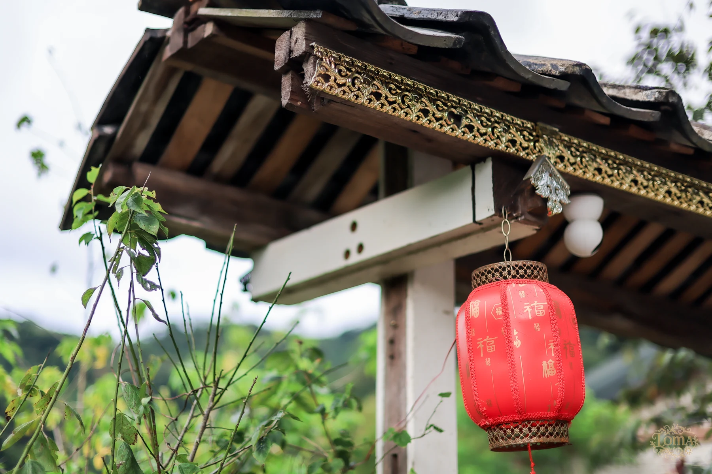
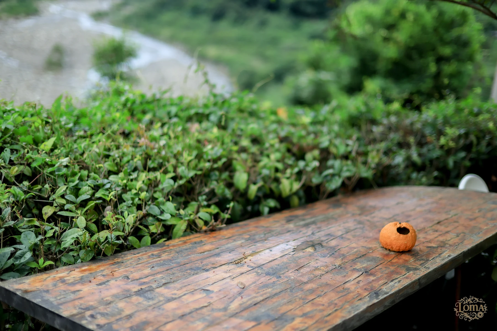
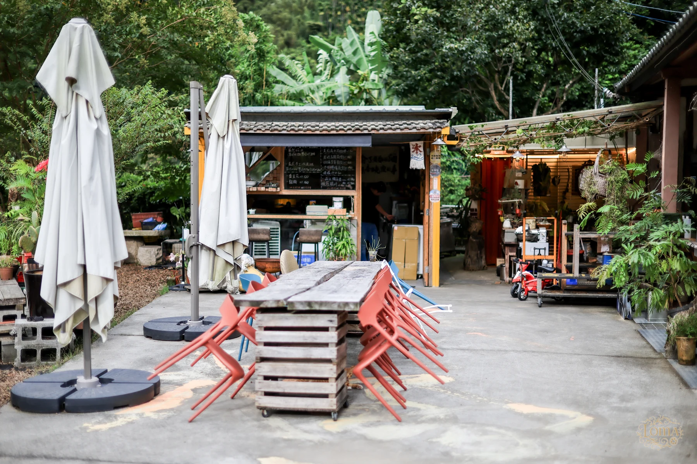
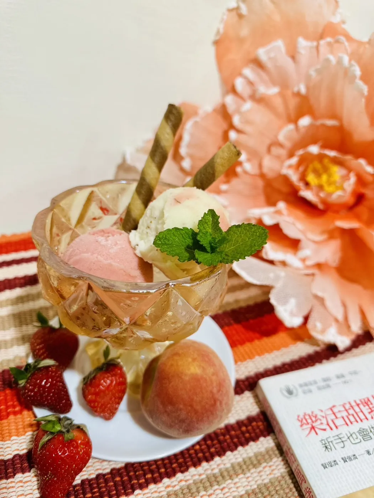
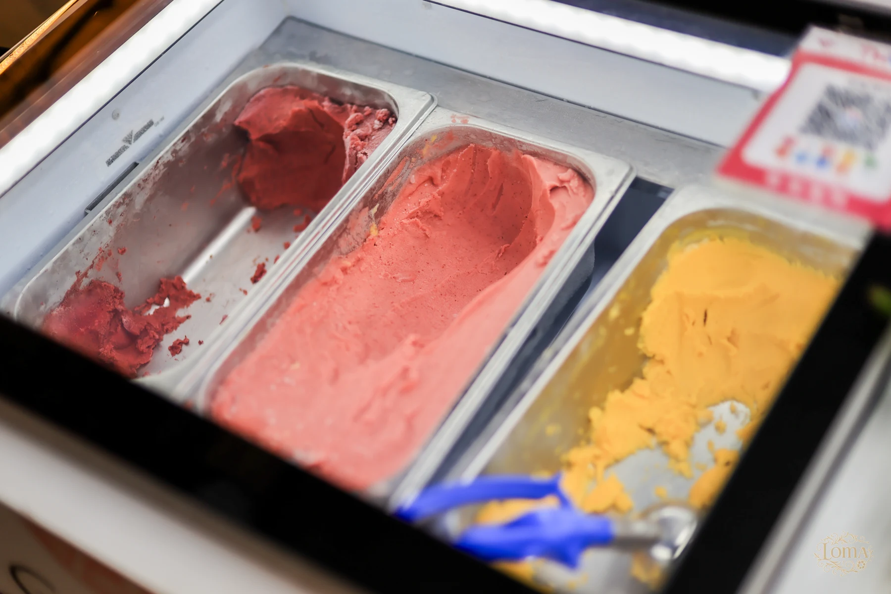

老屋一角關於伍貳居所老房子，
老房子，
繼續用。
從橘二代的果園，走到清安村的老屋。
伍貳居所是橘二代的餐廳。整理老屋時，保留了木作與竹編夾泥牆，讓原本的房子繼續有人使用。
餐點以客家口味為主；屋外的院子，留給花草，也留給來吃飯的人。
看環境照片 ↗



老屋一角從橘二代的果園，走到清安村的老屋。
伍貳居所是橘二代的餐廳。整理老屋時，保留了木作與竹編夾泥牆，讓原本的房子繼續有人使用。
餐點以客家口味為主；屋外的院子，留給花草，也留給來吃飯的人。
看環境照片 ↗福菜風味與客家鹹湯圓，
是這裡的兩種招牌口味。
 客家銅鍋・餐點實拍
客家銅鍋・餐點實拍以客家福菜入湯，搭配鍋物配料。喜歡醃漬香氣，可以先問問這一鍋。
把客家鹹湯圓做成餐桌上的熱食。當日的配料與供應方式，可以在訂位時一起詢問。
照片為銅鍋餐點示意；品項、份量與價格請洽店家。
詢問餐點與訂位 ↗
橘二代冰研所白天到傍晚的伍貳居所。
點照片可放大。